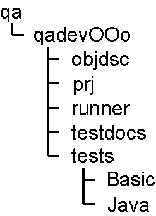

Before you start builing the qadev tests, you need a working solar environment on your local machine, with a working Java version. See the OpenOffice.org documentation for a detailed instruction. The solar environment should be of the latest build.
After checking out qa/qadevOOo you will find the following structure on your machine:

The qadev tests consist of two parts.All files that make up the runner are located in the runner directory and its subdirectories. In objdsc there are the object descriptions, meaning the test assignment that has to be fulfilled. Several files (e.g documents, charts, graphics, jars, etc.) that are used by the tests can be found in the folder testdocs. Finally, prj contains the build list and the deliver list.
The build command will build the Runner and the Java tests, ultimately creating a package OOoRunner.jar out of this, containing additionally the content of the objdsc folder. (Note: the basic tests do not need compilation).
The compiled files and the jar can be found in the generated ouput path (e.g qadevOOo/unxsols4/class on Solaris).
With the "deliver" command, the OOoRunner.jar is brought to your local environment.
You should make sure that the OOoRunner.jar is in your CLASSPATH, together with the needed Office jars. (See the General User Guide for more details and how to execute the tests.)